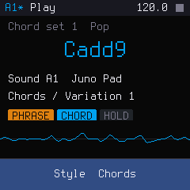
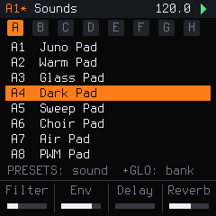
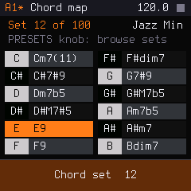
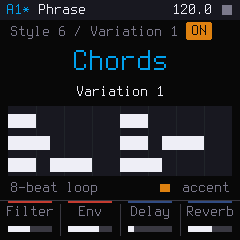
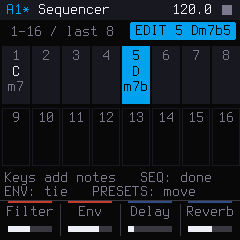
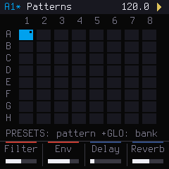
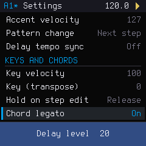

HERA puts the workflow of the Roland AIRA Compact J-6 on the M-VAVE FM-1, using its colour screen to show what the J-6 can't: every chord set as a key map, every phrase as a piano roll, and menus in plain words. An independent project; not made, endorsed or supported by Roland.

The screen always has the same frame:
| Button | Opens / does |
|---|---|
| HOME | Play page: the chord you're playing, the sound, the phrase, a live scope |
| SEQ | Sequencer page (press again: the pattern grid) |
| LFO | Sounds page |
| FX | Effects page (delay and reverb) |
| EDIT | Settings page |
| GLO | SHIFT: hold it for the second function of a control |

HERA has 64 Juno-style sounds in 8 banks: pads, strings, brass, keys, bass, leads, plucks and effects. Each pattern remembers its sound.
| To… | Do this |
|---|---|
| Open the sound list | LFO |
| Step through sounds | Turn PRESETS. The keys keep playing, so you hear each sound as you browse |
| Jump a bank of 8 | GLO + turn PRESETS (on the Sounds page) |
| Filter cutoff · release · delay · reverb | K1 · K2 · K3 · K4 |
| Resonance · attack · delay time · reverb time | Hold GLO and turn K1–K4 |

In chord mode every key plays a chord from the current chord set. There are 100 sets, the same as the J-6's, from pop and jazz to synthwave, trance, gospel, neo soul and classical.
| To… | Do this |
|---|---|
| Turn chord mode on / off | Tap SEL (lit when on) |
| See which chord is on which key | Hold SEL (or GLO + SEL): the chord map |
| Choose a chord set | On the chord map, turn PRESETS. Play keys to audition |
| Play the chords higher / lower | OCT − / OCT + |
| Transpose the whole keyboard (KEY) | GLO + OCT − / OCT + |
When you change from one chord to the next, notes the two chords share keep sounding (Chord legato, in Settings). Set it to Off to restart every note.

With the phrase function on, the notes or chord you hold are played for you as an arpeggio, a rhythm or a strum, in time with the tempo. There are 9 styles of 12 variations.
| Style | What it does |
|---|---|
| 1–2 | Arpeggios in 8ths / 16ths: up, up/down, down, over two octaves, and triplets |
| 3 | Note lengths, from double-whole notes to 16ths (and triplets): one long chord per step |
| 4–5 | 16th-note rhythm patterns |
| 6–7 | Chord phrases, simple / rhythmic |
| 8–9 | Strummed chord phrases, simple / rhythmic |
| To… | Do this |
|---|---|
| Turn the phrase on / off | Tap ARP |
| Change style · variation | Turn SELECT · ALGORITHM |
| See the phrase as a piano roll | Hold ARP (styles 6–9; accents in orange) |
| Keep it playing after you let go | ENV (HOLD). Press again to release |
A phrase starts the moment you press a key and stops when you let go (unless HOLD is on). Accented notes play at the Accent velocity setting.

A pattern has up to 64 steps. Each step holds up to 4 notes or one chord, and can have its own phrase. The screen shows 16 steps at a time.
| To… | Do this |
|---|---|
| Open the sequencer | SEQ |
| Show steps 1–16 / 17–32 / 33–48 / 49–64 | OCT − / OCT + |
| Edit a step | Turn PRESETS (the first turn picks step 1). The keys then enter notes. The lights under the white keys show the steps: lit = has notes, flashing = playing now, blinking = being edited |
| Put notes or a chord in it | Play keys (chord mode on: one key = its chord) |
| Move to the next step | Turn PRESETS |
| Tie the step into the next one (long notes) | ENV (again for a longer tie) |
| Give the step its own phrase | ARP, then SELECT / ALGORITHM |
| Finish editing | SEQ |
A step without its own phrase keeps the phrase of the step before it, so you only set a phrase where it changes.
| GLO + F3 | Copy the step | GLO + G3 | Paste |
| GLO + A3 | Insert an empty step | GLO + B3 | Clear the step |
| GLO + C4 | Double the pattern (copy all steps after the last one) | ||
| To… | Do this |
|---|---|
| Play / stop | Tap PLAY |
| Play from the selected step | GLO + PLAY |
| Full stop: stop and silence everything, effects included | Hold PLAY for half a second |
| Record in real time | REC (the screen says Press PLAY), then PLAY (after the count-in, if set), then play. Each key goes into the step playing at that moment, the one flashing under the white keys: a chord replaces the step, a single note adds to it (up to 4). A step is 4 beats by default, so play one chord per step. It keeps recording round the loop (overdub) |
| Punch in / out | REC during playback starts recording at once; REC during recording stops recording but keeps playing; PLAY stops both |
| Change tempo | Turn PRESETS on the play page (hold GLO for 0.1 BPM) |
Step length, shuffle, last step and count-in are in Settings.

64 patterns in 8 banks (A–H) of 8. A pattern remembers its steps, sound, tempo, phrase and knob settings.
| To… | Do this |
|---|---|
| Open the pattern grid | SEQ twice (SEQ again goes back to the steps) |
| Pick a pattern / jump a bank | Turn PRESETS / GLO + turn PRESETS. The keys keep playing |
| Save the pattern | SAVE |
| Save all patterns | GLO + SAVE |
| Clear the current pattern | EDIT, turn PRESETS to Clear pattern (the RESET group at the bottom), then hold SAVE until the row fills. Its steps are emptied; its sound, tempo and settings stay. Press SAVE to keep it |
| Factory reset | EDIT, PRESETS to Factory reset, then hold SAVE. Erases all 64 patterns and every setting, and cannot be undone |
While a pattern plays, the next one you pick is queued (a yellow frame) and starts on the next step, or after the number of beats set in Pattern change. Unsaved changes are lost at power-off, as on the J-6.

Press EDIT. Turn PRESETS to choose, K1 to change. Leaving the page saves.
| Group | Settings |
|---|---|
| Pattern | Tempo, Last step, Step length, Shuffle, Pattern volume, Transpose, Accent velocity, Pattern change, Delay tempo sync |
| Keys and chords | Key velocity, Key (transpose), Hold on step edit (Release / Keep), Chord legato (On / Off), Count-in |
| MIDI | MIDI channel, MIDI thru, Send / receive program change, Program change channel |
| Sync | Clock source (Auto, Internal, MIDI only, USB only), Sync pulses per beat |
| System | Tune (433–448 Hz), USB audio level |
HERA appears as a USB-MIDI device. It plays on MIDI channel (1 by default) and sends the notes you play. It switches patterns with program changes 0–63 on the Program change channel (16 by default), and sends and follows MIDI clock, start and stop. Chord-mode notes are not sent, as on the J-6.
python3 tools/fm1_install.py hera.fwsc.tools/fm1_install.py FM-1_015.fwsc.USB rescue: if HERA doesn't start, hold OCT − while switching the FM-1 on. It starts in update mode, and the installer works as usual. After two failed starts in a row it enters rescue by itself.
| Control | Tap | Hold / with GLO |
|---|---|---|
| PLAY | Play / stop | Hold: full stop · GLO: play from the step |
| REC | Record | |
| SEL | Chord mode | Hold or GLO: chord map |
| ARP | Phrase on / off | Hold: phrase page |
| ENV | HOLD (step edit: tie) | |
| SEQ | Sequencer; again: patterns (editing: finish) | |
| HOME LFO FX EDIT | Play · Sounds · Effects · Settings | |
| SAVE | Save the pattern | GLO: save all |
| OCT −/+ | Octave (sequencer: step page) | GLO: key transpose |
| K1–K4 | Filter · release · delay · reverb | GLO: resonance · attack · delay time · reverb time |
| SELECT · ALGORITHM | Style · variation | |
| PRESETS | Tempo, or what the page browses | GLO: tempo in 0.1 BPM |
HERA is free software (GPL-3.0). "Roland", "J-6", "JUNO" and "AIRA" are trademarks of Roland Corporation; "M-VAVE" and "FM-1" belong to their owners. HERA is not made, affiliated with or endorsed by them.